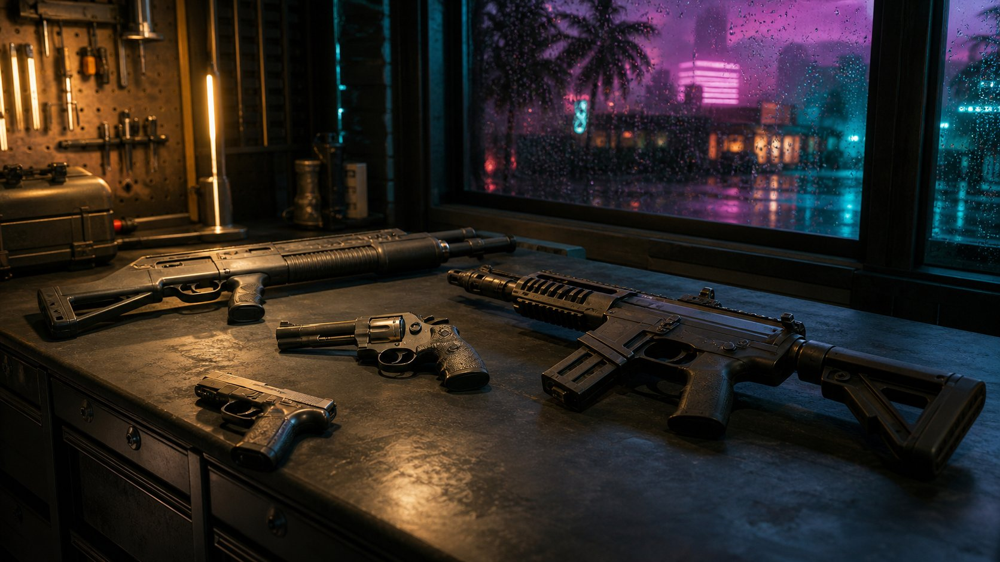

Arme nommée à l'écran
Moreland 850 Shotgun : le prompt de l'Extended Look donne un exemple clair de marque et modèle fictifs dans l'interface.

ARSENAL · ÉTAT DES SOURCES AU 18 NOVEMBRE 2026
Le jeu arrive demain, mais les tests presse sont sortis aujourd'hui. Ici, les noms explicitement publiés par Rockstar, les armes visibles, les identifications d'images et les fuites n'occupent pas la même colonne.
Rockstar ne publie pas de tableau exhaustif avec toutes les armes, statistiques et lieux d'obtention. Un nom écrit dans une page officielle est plus solide qu'une silhouette rapprochée; un identifiant de modèle réel déduit par un vidéaste n'est pas forcément le nom du jeu. Les critiques qui ont joué avant le lancement apportent maintenant des observations pratiques, citées comme presse de lancement, et non comme documentation Rockstar.
| Niveau de preuve | Ce qu'on peut dire | Limite à garder |
|---|---|---|
| Confirmé par le texte Rockstar | Girardi ES9, Klose K17 et Hawk & Little Morgan Revolvers sont cités dans le contenu de l'Ultimate Edition. | Les gravures/personnalisations sont un bonus de l'édition Ultimate; cela ne prouve pas que l'arme standard est exclusive à cette édition. |
| Nom lisible dans une vidéo Rockstar | Le prompt de ramassage de l'Extended Look affiche « Moreland 850 Shotgun ». | La vidéo montre ce nom précis, mais n'est pas une liste intégrale de l'arsenal. |
| Arme montrée / catégorie visible | Pistolets, revolvers, fusils, fusils à pompe, armes automatiques et lance-grenades apparaissent dans le matériel officiel. | Une forme ressemblant à un vrai modèle ne confirme ni le fabricant fictif, ni la classe exacte, ni les caractéristiques de jeu. |
| Reportage et test du 18/11 | Plusieurs critiques décrivent une sélection limitée d'armes portées, un rangement dans le véhicule, la réaction des PNJ aux armes longues visibles et des accessoires. | Ce sont des observations de test attribuées à leurs auteurs; les touches, règles et versions peuvent différer selon plateforme/contexte. |
Les deux protagonistes ont des sidearms nommés par Rockstar : Jason et son Girardi ES9, Lucia et son Klose K17. Une paire de revolvers Hawk & Little Morgan est aussi explicitement annoncée dans l'Ultimate Edition. Pour les autres silhouettes populaires sur les listes du web, ouvre la fiche pistolets : chaque identification reçoit son propre niveau de preuve.
Noms Rockstar, armes visibles, inspirations réelles attribuées et conseils de test presse.
Duke 556 à l’image, conseils de portage et combat attribués aux reviews; sans inventaire gonflé.
Lance-grenades vus dans les trailers; caractéristiques, roster et déblocages restent à confirmer.
Blocages, contres et Focus selon la presse; avis nuancés sur la profondeur et les listes d’objets.
Moreland 850 Shotgun : le prompt de l'Extended Look donne un exemple clair de marque et modèle fictifs dans l'interface.
Des tests décrivent une limite de portage : quelques sidearms et armes longues, le reste rangé dans le véhicule ou un casier. La silhouette d'une arme longue visible peut attirer l'attention. Évite de traiter la roue d'armes comme un sac sans fond.
Des reviewers recommandent un silencieux pour les approches discrètes, et rapportent qu'un pistolet est moins voyant à transporter qu'un fusil. C'est un choix de style de jeu, pas la preuve d'une arme « meilleure » universellement.
Les critiques rapportent des options de visée assistée/manuelle et une mécanique de Focus qui ralentit brièvement l'action. Essaie les réglages de sensibilité et d'aide à la visée dans un lieu sûr avant une mission tendue; les valeurs idéales dépendent du joueur.
Les dégâts, précision, cadence, prix, déblocages et emplacements changent d'une arme à l'autre. Nous n'ajoutons pas de valeurs numériques sans capture du jeu vérifiable ou test comparatif sourcé.
Les listes communautaires annonçant 30, 40 ou 51 armes s'appuient parfois sur des noms recyclés de fuites anciennes, des classes estimées ou un catalogue non officiel. Aucun total complet publié par Rockstar n'a été trouvé dans les sources vérifiées le 18/11.